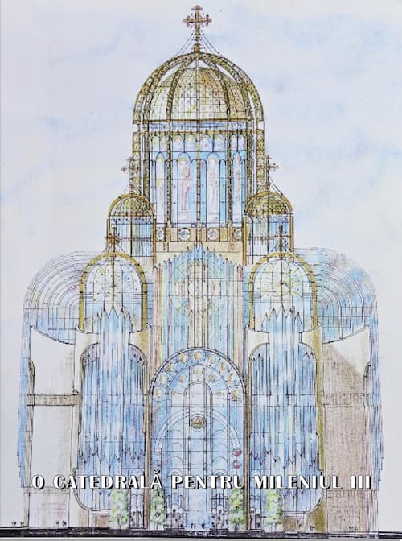

În cuvântul rostit la întronizare actualul Întâistătător, Daniel Ilie Ciobotea, cerea cu lacrimi în ochi ajutorul ierarhilor, preoților și credincioșilor întru slujirea Bisericii și mulțumea „și celor ce ne încurajează și celor ce ne critică, dacă totul este spre binele Bisericii. Când greșim, trebuie să ne pocăim, să cerem iertare și să ne îndreptăm, iar când facem binele, rugăm să fim ajutați și mai mult, cu fapta, tot spre binele vieții și lucrării Bisericii” (Lumina, săptămânal de spiritualitate și atitudine creștină, Duminică, 28 septembrie 2025, www.ziarullumina.ro). Și iată ce citim pe prima pagină: „Patriarhul Daniel al României, teolog, ctitor și arhipăstor providențial pentru Biserica Ortodoxă Română”. Poporul nostru vlah, creștinat apostolic, atâta cât îl știe doar Domnul nostru Iisus Hristos că a mai rămas, credincios în Duh și Adevăr Sfintei Predanii, are o vorbă foarte realistă, adâncă și verificată în toată istoria sa bimilenară, fiind în Grădina Maicii Domnului: „Lauda de sine nu miroase a bine!” – ba chiar după trădare și minciună miroase cel mai urât!!!
În zilele noastre asistăm la o encomiastică oficială, trufașă, jenantă, dureroasă și costisitoare, evident reciproc avantajoasă: eu te laud pe tine, tu mă răsplătești pe mine, iar talpa și prostimea planetară, ne umple sacii cu bani amândurora, ca să stăm noi înfipți în șa și s-o călărim pe ea, uite așa, cu stipendii asigurate și privilegii garantate!!! Și ce dacă slugărim fățiș la doi stăpâni, drept învățând și strâmb înfăptuind cuvântul Adevărului? Sfinții Lui Dumnezeu adevărați, cei descoperiți de Sus, nu au doctorate ca noi în theologie și masterate în gnoze și kabale luciferice vădite, sau în panerezia ecumenismului asimilată prin institute masonice, corecte politic, dar anti-Hristice? Câtă vreme talpa și prostimea planetară nu înțelege ce înseamnă „un vrai temoignage de l’Orthodoxie en Occident!”, noi ne plimbăm cu atv-urile prin codrii și semnăm fără mustrări de conștiință, ca niște yesmani docili cum am ajuns, simoniile, hierosiliile, canonizările necanonice ale unor ereziarhi dovediți, amăgiți și amăgitori, hipnotiști, auto-hipnotiști, vrăjitori, adepți ai reîncarnărilor, spiritismului și introducerii paranormalului în viața creștinilor ortodocși la comanda ocultofililor, simple unelte teomahe îmbrăcate în haine religioase, care încalcă nebunește din mândrie și banală superbie, Poruncile Lui Dumnezeu.
Cităm din cuvântul Înaltpreasfințitului Serafim, Mitropolitul Germaniei Europei Centrale și de Nord: „Colegul nostru, Daniel Ilie Ciobotea, s-a remarcat în toți acești ani de studii ca fiind cel mai bun, înzestrat de Dumnezeu cu o inteligență sclipitoare și o evlavie pilduitoare” (n. r. – la întronizarea ca Patriarh, Preafericitul Părinte Daniel mărturisea că este conștient „de cât de mare și sfântă este responsabilitatea de Părinte duhovnicesc și arhipăstor al Bisericii Ortodoxe Române, o sarcină grea purtată pe umeri slabi”). Tot din vremea studiilor, îmi amintesc de felul în care știa să aducă bună dispoziție printr-un spirit de observație subtil și un umor rafinat, calități care îl însoțesc și astăzi”.
Cu smerită metanie de gând și scuzele de rigoare, vă vom întreba cuviincios, Vlădica Serafim, la care formă de inteligență vă referiți, aistea fiind mai multe. Psihologii creștini profesioniști, dar și oamenii de bun simț și cu un discernământ real, știu demult sau constată la vremea potrivită, cu nespusă ușurare, că există cel puțin zece tipuri de inteligență, precizând și faptul extrem de semnificativ și evident că inteligența este o măsură îndeosebi intensivă și mai puțin extensivă: mistică, taumaturgică, lingvistică, logică, muzicală, kinestezică, intrapersonală, interpersonală, naturalistă. Există inteligențe multiple, prin asocierea a două sau mai multe dintre aceste tipuri de inteligență, care având simțul moral drept călăuză împing permanent omenirea înainte, altruiste până la sacrificiu, prin con-creativitate!
Ei bine, în timpul petrecut la Bossey actualului Întâistătător, tocmai simțul mistic i-a lipsit, sau i-a fost retras Harul acesta de Sus, iar inteligența nu i-a funcționat la măsura discernământului tradițional al creștinilor ortodocși credincioși Sfintei Predanii, ci pe un palier imprudent, novator și ecumenist. Desigur, întrebându-ne pe noi, talpa și prostimea planetară, pleava lumii acesteia efemere, de care însă ea nu-i vrednică, după cuvântul Sfântului Apostol Pavel, vă vom spune cu durere că am fi dorit ca, în vremea cernerii de Sus venită, pentru păcatele noastre, ale păstorilor și păstoriților, să avem ca Baci Duhovnicesc un Patriarh ca Prea Fericitul Pavel al Serbiei, ca Prea Fericitul Ilia al Georgiei, sau ca Prea Fericitul Patriarh Teoctist, care la ultima întâlnire a ocultofililor de la Sibiu, cu vreo două luni înainte de sfârșitul pământesc, nu s-a mai dus, plecând mucenicește și mărturisind Adevărul după Sfânta Predanie. Acest lucru l-a cerut tuturor Avva Cleopa, Duhovnicul tuturor duhovnicilor, dar și actualului Întâistătător, fiindu-i naș de călugărie, cerându-i în chilia Sfinției Sale să lepede, fie și cu prețul vieții pământești, panerezia ecumenismului, toate gnozele luciferiste și corecte politic de la Bossey, institut masonic și anti-Hristic, de mult compromis în conștiințele creștinilor ortodocși cu fapta, înviați și înfiați lăuntric ca fii ai Luminii!!!

„Când va veni Fiul Omului întru slava Sa, și toți sfinții îngeri cu El, atunci va ședea pe tronul slavei Sale. Și se vor aduna înaintea Lui toate neamurile și-i va despărți pe unii de alții, precum desparte păstorul oile de capre. Și va pune oile de-a dreapta Sa, iar caprele de-a stânga. Atunci va zice Împăratul celor de-a dreapta Lui: «Veniți, binecuvântații Tatălui Meu, moșteniți împărăția cea pregătită vouă de la întemeierea lumii”. Căci flămând am fost și Mi-ați dat să mănânc; însetat am fost și Mi-ați dat să beau; străin am fost și M-ați primit; gol am fost și M-ați îmbrăcat; bolnav am fost și M-ați cercetat; în temniță am fost și ați venit la Mine».
Atunci drepții Îi vor răspunde: «Doamne, când Te-am văzut flămând și Te-am hrănit? Sau însetat și Ți-am dat să bei? Sau când Te-am văzut străin și Te-am primit, sau gol și Te-am îmbrăcat? Sau când Te-am văzut bolnav sau în temniță și am venit la Tine?». Iar Împăratul, răspunzând, va zice către ei: «Adevărat zic vouă, întrucât ați făcut unuia dintr-acești frați ai Mei prea mici, Mie Mi-ați făcut». Atunci va zice și celor de-a stânga: «Duceți-vă de la Mine, blestemaților, în focul cel veșnic, care este gătit diavolului și îngerilor lui. Căci flămând am fost și nu Mi-ați dat să mănânc; însetat am fost și nu Mi-ați dat să beau; străin am fost și nu M-ați primit; gol, și nu M-ați îmbrăcat; bolnav și în temniță, și nu M-ați cercetat…».
Atunci vor răspunde și ei, zicând: «Doamne, când Te-am văzut flămând sau însetat, sau străin, sau gol, sau bolnav, sau în temniță și nu Ți-am slujit?». El însă le va răspunde, zicând: «Întrucât nu ați făcut unuia dintre acești prea mici, nici Mie nu Mi-ați făcut». Și vor merge aceștia la osândă veșnică, iar drepții la viață veșnică.”
Să nu uităm că Avva Cleopa nu a primit să fie Patriarh în 1990, dintr-o smerenie patericală și evlavie reală, deci cu 18 ani înainte ca actualul să ajungă, în condiții nu tocmai canonice, dorind să ajungă. Știm toate detaliile de la vrednicul de pomenire, și Prea Fericit Părinte Patriarh Teoctist, care lucrează și după moarte cu putere multă, cum adeseori ne zicea, de la Părintele Antonie Plămădeală, Arhiepiscop al Sibiului și Mitropolit al Ardealului, Crișanei și Maramureșului, de la Părintele Arhimandrit Grigore Băbuș, custodele Bibliotecii Sfântului Sinod, de la sora noastră mai mare, Maria Zaharescu, fiica Părintelui Duhovnic Alexandru Zaharescu, ale cărui predici de foc hristic îi făceau să tremure pe „specialii” trimiși să-l supravegheze, de la Părintele Profesor Radu Dumitru, colaborator apropiat și prieten al Avvei Dumitru Teologul, Apărătorul Ortodoxiei, Teologul Iubirii și al Tainei Persoanei, dar și de la Părintele Profesor Constantin Cornițescu, o vreme decan pe deplin luminat al Facultății de Teologie din București, adormit anul trecut plin de Lumina Hristică a Învierii. Toți cei enumerați mi-au lăsat înscrisuri clare, devenite între timp documente de necontestat, cu datoria sfântă de-a le publica ceea ce și fac, scriindu-le și semnându-le cu sângele sufletului meu, nevrednic și păcătos, dar temător de Dumnezeu!!!
Dar iată ce zice Părintele Mitropolit de Florina, Augustin Kandiotis, de cuvântul căruia se tem până și masonii cu gradele cele mai înalte, și chiar cei cu grade știute doar de arhiconii pseudoteologi: „Hristos este Mirele sufletului. Duhovnicul este doar nimfagogul, cel care conduce mireasa spre Mire. Unii teologi, chiar și arhimandriți și părinți duhovnici își confundă rolul. Nu se consideră pe ei înșiși mici lucrători ai Evangheliei… Știți faptele, să nu le mai spunem. Acum, în ultima vreme există mania stărețismului. Voi scrie un articol despre aceasta. Înfricoșător, groaznic lucru! Flăcăul de ieri, pe care doar l-ai hirotonit, vrea să-și facă adepți și admiratori. Să rupă din Biserică și să strângă… să se adune creștinii în jurul lui. În felul scesta se risipesc forțele Creștinismului. Și de-acum, fiecare arhimandrit are mania stărețismului. O mare boală este aceasta în Biserica Lui Hristos (…) Dacă Dumnezeu este cu noi, nimeni nu este împotriva noastră, înțelegeți neamuri și vă plecați, căci cu noi este Dumnezeu. Aceasta este esențial… Există astăzi astfel de persoane în Florina, care nu au doar mania stărețismului, ci și a episcopatului? Există. Și poporul le știe. Nu sunt multe. Una sau două, dar profită de toate prilejurile pentru promovarea și afirmarea lor. Să pună mâna pe mitră, cârjă și să se închine chiar și lui anti-Hrist. De la astfel de episcopi, pe care nu-i alege poporul credincios și care nu sunt aleși prin pogorârea Duhului Sfânt, la ce să te aștepți?”.
Să vedem cum îi descrie, respectabilul și luptătorul Ierarh Ortodox al Florinei, Părintele Augustin Kandiotis. Ascultați-l. „Hristofor Kalivas, un prieten de suflet, o personalitate importantă, mi-a spus cu ani în urmă: bre, Augustine, n-ai înțeles ce se va întâmpla ? – satana uneltește prin toate mijloacele, ca să distrugă Biserica; va unelti în vremurile din urmă și o ultimă armă, îmbrăcând el preoți și episcopi, persoane de sub stăpânirea sa, punându-le la gât engolpioane și în mâini paterițe, iar prin acești arhierei va distruge Biserica” (n. r. – numai dacă Împăratul Vieții va îngădui una ca aceasta, dar nu va îngădui, fiindcă Biserica Lui va sta până la sfârșit și porțile iadului nu o vor putea birui!!!). „Nu eu sunt mirele sufletului vostru, ca să plângeți când plec. Mirele vostru este Hristos. Pe El să-L iubiți și lângă El să fiți întotdeauna. Eu sunt doar un nimfagog. Lucrul acesta să-l înțelegeți bine. Dacă nu-l înțelegeți, nu veți mai vedea fața mea și nu voi mai comunica prin scrisori cu voi. Părintele Augustin, printr-o astfel de asprime, respingea orice fel de cult al personalității la adresa sa și învăța rolul duhovnicului în viața credinciosului” (n. r. – „Ne vorbește Părintele Augustin din Brațele Lui Hristos”, vol. IV, traducere Frăția Ortodoxă Misionară Sfinții Trei Noi Ierarhi, 2010, pag. 45-47). A primit cineva dintre sinodalii contemporani, aflați acum în plină și prea bucuroasă, excesivă și cointeresată encomiastică, vreo mustrare pentru aiastă lăudăroșenie publică jalnică, și noi nu știm!?
Acum să vorbim, obiectiv, realist și cu documentul înaintea noastră despre istoria reală a Catedralei:
HRISOV
Cu vrerea Tatălui, cu ajutorul Fiului și săvârșirea Sfântului Duh, Treimea Cea Deoființă și Nedespărțită, azi, 5 februarie 1999, am așezat această Sfântă Cruce pe locul unde se va construi Catedrala Mântuirii Neamului, în semn de smerită mulțumire adusă Lui Dumnezeu pentru binefacerile dăruite poporului român.
Dorința și nădejdea construirii acestei Catedrale a existat încă din anul 1878, după războiul care a adus independența de stat a României, reluate apoi de primul Patriarh al Bisericii noastre, Miron Cristea care o va și numi Catedrala Mântuirii Neamului, și de urmașii săi. Vitregiile vremurilor au împiedicat însă împlinirea acestui ideal până acum, când, în acest sfârșit de mileniu, s-a aflat „plinirea vremii” și Dumnezeu ne-a binecuvântat să purcedem la începerea lucrului.
Construind această Catedrală, dăm Slavă Lui Dumnezeu și ne rugăm pentru binecuvântarea poporului român și a țării, dând totodată cinstire tuturor acelora care, de-a lungul istoriei noastre s-au jertfit pe altarul sfânt al credinței, libertății și unității neamului românesc.
Sfânta Cruce și locul viitoarei Catedrale au fost sfințite de Prea Fericitul Teoctist, Patriarhul României, înconjurat de membrii Sfântului Sinod al Bisericii Ortodoxe Române, în prezența Președintelui României, Emil Constantinescu, al unor înalți reprezentanți ai instituțiilor Statului și membrilor Adunării Naționale Bisericești, precum și a unor preoți și credincioși. Binecuvintează, Doamne, pe cei ce iubesc podoaba Casei Tale și pe toți cei ce se vor ruga în această Catedrală cu hramul „Înălțarea Domnului” și „Sfântul Apostol Andrei”, cel întâi chemat și Apostol al neamului românesc. Amin.
† Teoctist, Patriarhul Bisericii Ortodoxe Române
Membrii Sfântului Sinod
Emil Constantinescu, Președintele României
Petre Roman, Președintele Senatului
Ion Diaconescu, Președintele Camerei Deputaților
Radu Vasile, Prim Ministru al Guvernului
Nicolae Noica, Ministrul Lucrărilor Publice și Amenajării Teritoriale
Viorel Lis, Primar General al Capitalei
Demnitatea Ortodoxiei
Demnitatea Ortodoxiei este din totdeauna echivalentă cu puritatea, intensitatea și autenticitatea trăirii duhovnicești!
Acesta-i sensul viu al Ortodoxiei, a cărei demnitate reală, esențială, fundamentală și distinctivă este exprimată prin dimensiunile ei paradoxale și transfiguratoare, ca și de nesfârșirea unei înfricoșate smerenii, ținând în mod proniator, cu precădere și în principal, de miezul duhovnicesc al credincioșiei și secundar de suplețea formelor ei specifice, aparținând mai degrabă arhetipurilor sale inconfundabile, decât modalităților de vehiculare alese, într-o istorie bimilenară, subliniindu-și distincția prin câteva repere transcendentale sigure, uneori atât de subtile încât, în clipe de har deplin, ating imaterialitatea Luminii necreate („Lumina lină a Sfintei Slave”), fără a o răni vreodată, ca o arvună a Slavei viitoare, ca o înainte-prăznuire perpetuă, însoțită, cum altfel decât lin, de-o adiere înmiresmată, de un Duh a-tot-răzbătător, de-o sfințenie abia întrezărită, de-o bucurie negrăită (și incomunicabilă prin literă, ci doar prin Duh!); de-o milă nesfârșită suprafirească, de sorginte divină, de-o frumusețe nebiruită, împrejmuind în întregime făptura adevăraților ei slujitori (și luptători!), cu un Har trezitor special, care se evidențiază, cel mai adesea prin rugăciune, post, smerită cugetare, milostenie, dreaptă socoteală, ascultare luminată, sărăcie de bună voie și castitate deplină, într-o „prăpastie de smerenie”, toate „neîmpărțite și nedespărțite, neschimbate și neamestecate”, indiferent de timp, loc sau împrejurare, printr-o demnitate reală și suprafirească, pecetluită cu Sfânt Trupul și Scump Sângele Mântuitorului nostru Iisus Hristos, Fiul Lui Dumnezeu Cel în Prea Sfânta Treime Slăvit și închinat. Acest dar aparține și tuturor prietenilor Săi, care sunt toți Apostolii, Proorocii, Mucenicii, Mărturisitorii, Cuvioșii și Rugătorii în duh și adevăr de pretutindeni, dintotdeauna și din toate neamurile, din Biserica biruitoare și din Biserica slujitoare și luptătoare.
Atâta timp cât un singur om, unul singur (dar întotdeauna proniator se vor afla 7000 sau mai mulți, care nu-și vor pleca genunchii „noului Baal”!), va lua pe deplin, exemplar și vădit, jugul cel bun al Domnului nostru Iisus Hristos, demnitatea Ortodoxiei va străluci ca un diamant veritabil în mijlocul tuturor constelațiilor de orice fel, prețioase și ele, dar lipsindu-le transparența, tăria și simplitatea constructurală a acestuia…
Nimic de pe pământ nu poate exprima mai limpede, mai curat și mai direct, decât diamantul, demnitatea indestructibilă a Ortodoxiei, născută, nu făcută!
Izvorul acestei demnități, unice, dar nu solitare, este Însuși Mântuitorul Care arată, prin caratele slujirii reale și integral asumate, că Biserica Sa este vie prin ridicarea continuă de sfinți din mijlocul ei, în orice timp, în orice loc, sub orice stăpânire pământeană, vremelnică prin însăși definirea ei, pentru că în Împărăția Luminii celei veșnic neînserate, rangurile divino-umane sunt primite din mâna Arhiereului Suprem, Care nu poate fi insultat de nimeni, niciodată, nicăieri, în nici o împrejurare, fără ca demnitatea ce-o afirmăm, aparent impasibilă, să nu reacționeze! Și ea reacționează întotdeauna imprevizibil, paradoxal și transfigurator…
Să fim în locul hulitorilor ne-am teme cel mai mult, nu de pedeapsa în sine, care oricum vine, cât de etapele sale succesive și riguros exacte, care încep obligatoriu printr-o vedere înfricoșată a propriului chip, așa cum arăta el în clipa hulirii… Acest chip este atât de hidos, atât de desfigurat, încât mulți sărmani nefericiți n-au putut rezista vederii lor lăuntrice, ajungând loru-și demoni, ieșind în mod tragic, uneori fără întoarcere, din „cămara luminată a Domnului nostru Iisus Hristos!”.
Oare e puțin lucru să ai o asemenea demnitate, care doar atinsă, fără să miște cumva un deget, trimite în întunericul dinafară, sau, dimpotrivă, într-o metanoia profundă, numai prin forța rugăciunii lăuntrice pe orice nesocotit sau nefericit, amăgitor sau rătăcit ce încearcă s-o batjocorească?
O demnitate vie, dar nicidecum suficientă, inflexibilă, dar nu rigidă, aspră, dar nu țâfnoasă, exigentă, dar nu exclusivistă, senină, dar nicicând nepăsătoare, simplă, dar deloc simplistă, integrală, dar nu sufocantă, cuviincioasă, dar nicicum condescendentă, ocrotitoare prin avertizare, dar niciodată amenințătoare, într-un cuvânt o demnitate înnăscută, nu făcută.
Oare care demnitate este mai mare, cea care impune vremelnic sau cea care dispune veșnic? Cea care distruge în bogăție sau cea care zidește în sărăcie?
Cea care înmulțește ceremoniile, scăzând fervoarea credinței sau cea care păstrează cu evlavie Sfânta Tradiție a Bisericii „Una, Sfântă, Sobornicească și Apostolică”, născătoare de sfinți, într-o cascadă de lumină vie?
Cea care recomandă mulțimilor dezorientate un ecumenism facil și vag „umanist”, abstract și steril, elitist și ocultofil, prin monologuri paralele (ca universurile lui Plutarh…), sau cea care crește pe orice vreme, în mod real, generații întregi de nevoitori creștini în dialog, permanent și viu, vădit și adeverit prin fapte, cu Dumnezeul Cel Viu și în Prea Sfânta Treime Slăvit și închinat!
Cea care cade și decade în autonomie anarhică sau cea care stă în trezvie și comuniune harică?
Cea care strigă întunericul prin faptele întunericului sau cea care cheamă Lumina prin faptele Luminii?
E atâta putere în slăbiciunea aparentă a demnității Ortodoxiei, încât ne-am teme s-o trezim, fie și prin rememorări, în dimensiunea ei martirică, înainte de plinirea vremii.
„Almanah Bisericesc” (1999): „Demnitatea Ortodoxiei”
dr. Ioan Gându
P. S. – Text scris la îndemnul și cu binecuvântarea Prea Fericitului Părinte Patriarh Teoctist, vrednicul nostru de pomenire Întâistătător al Bisericii Ortodoxe Române. După peste două decenii de la publicarea acestei mărturii de credință, și posibil document, am adăugat la început un singur cuvânt (puritatea), întrucât un text poate fi semnificativ, clar și viu, doar prin Milostivirea Domnului nostru Iisus Hristos și grija Îngerului Luminător, care l-a scris cu mâna mea nevrednică, dar și cu binecuvântarea Duhovnicului meu din vremea aceea, care-mi zicea luminat, cu adânci și nebiruite temeiuri scripturistice, că toți întemeietorii unei religii istorice, nu revelate, cum este Credința Ortodoxă, vor veni la Judecata particulară și cea generală, a fiecărui om și a fiecărui neam, deoarece întreaga Putere în Cer și pe pământ Îi aparține numai Lui Hristos, Unicul Dumnezeu adevărat din Dumnezeu adevărat, născut, nu făcut, și în Prea Sfânta și Dumnezeiasca Treime Slăvit și închinat, Care pentru noi oamenii, și pentru a noastră mântuire, S-a pogorât din ceruri și S-a întrupat din Duhul Sfânt și din Maria Fecioara și S-a făcut om. Și S-a răstignit pentru noi în zilele lui Ponțiu Pilat și a pătimit și S-a îngropat; Și a înviat a treia zi, după Scripturi; Și S-a înălțat la ceruri și șade de-a dreapta Tatălui; Și iarăși va să vină cu Slavă să judece viii și morții, a Cărui Împărăție nu va avea sfârșit.
Ori de câte ori întâlnesc un om, chemat la Taina Mântuirii, de orice neam sau orientare spirituală ar fi el, dacă văd că stă departe de Mântuitorul Iisus Hristos sau Îl slăvește doar cu buzele, mă inundă o compasiune vie pentru el, începând să mă rog, după puteri, pentru venirea sa la cunoștința Adevărului și învierea lui lăuntrică, căci ce folos, ce folos, o viață fără de Hristos, cum se cântă într-o frumoasă priceasnă bisericească, profundă și nemuritoare, ca o apoftegmă inspirată de Sus.
Dacă Îl avem pe Hristos Domnul în inimi, avem totul, aici și Dincolo; dacă nu-L avem, nu avem nimic, nici aici, nici Dincolo… Doamne, Iisuse Hristoase, Fiul Lui Dumnezeu, Te rugăm cu umilință, adu-ne pe toți cei Botezați Ortodox și chemați la Taina Mântuirii, în Duh și Adevăr, întru Bucuria Învierii, numai după Voia Ta Cea Sfântă, Dreaptă, Veșnic Biruitoare, Atotînțeleaptă și Dumnezeiască, nu după voia noastră cea păcătoasă, strâmbă, slabă întotdeauna și omenească. Amin. Amin. Amin.
Doar câteva cuvinte mai trebuie să adăugăm, pentru ca encomiastica oficială trufașă, jenantă, dureroasă și costisitoare privind Catedrala, pe care o vedem aproape gata, să capete o înțelegere corectă, teologică, spirituală, morală, duhovnicească, istorică și cu proporții responsabile, chibzuită chivernisitor și înțelept de către Prea Fericitul Patriarh Teoctist. Motivele reale sunt în ordine: tergiversarea sistematică a proiectului mult mai frumos arhitectural inițial, realizabil în cinci ani și achitat în întregime de donatori români, ortodocși cu fapta și patrioți din America și Canada, tergiversare făcută prin viclenie de către ocultofilii care mișună și acum, precum odinioară, pe „Colina bucuriei” (n. r. – de care actualul Întâistătător, vai, tot mai întunecat la chip și adept al stărețismului autoritarist, episcopal și superbist, nu-i străin; susținătorii prezentei construcții, cu adăpost antiatomic la subsol și simboluri masonice peste tot, înăuntru și înafară, refuză cu obstinație să facă distincția, imperios necesară, dintre Măreția Cerească dăruită doar de Sus și enormitatea impusă cu anasâna pe pământ numai de oameni fără frică de Dumnezeu; vom republica macheta propusă inițial în 29 ianuarie 1999, reamintind pentru cei care nu știu, sau nu vor să mai știe, că pe la anul 1.500, Cuviosul Nil înălțase pentru Slăvirea Lui Dumnezeu o Catedrală Ortodoxă, tot în vreo cinci ani, cu totul aurită, înăuntru și înafară, împodobită cu cele mai frumoase pietre prețioase, respectând strict dogmatic toate erminiile ortodoxe, realizare bisericească arhitecturală unică în istoria Creștinismului, pe lângă care ceea ce susțin adepții „tradiționalismului dinamic” și admiratorii necugetați ai pan-ereziei ecumenismului la comandă ocultă, întruchipată în construcția realizată în 17 ani de autoritarism ai păstoririi Întâistătătorului Daniel, care știe sigur însă ce soartă a avut construcția uimitoare și unică a Prea Cuviosului Nil: la cererea Îngerului trimis de Dumnezeu a dărâmat-o, iar aurul și întreaga contravaloare a pietrelor prețioase a dăruit-o săracilor, Îngerul zicându-i că Dumnezeu iubește Bisericile mici în care și arhiereii intră aplecându-se!!!).

Fermecătorii și închinătorii la idoli merg în iezerul care arde
„Iar partea celor fricoși și necredincioși și spurcați și ucigași și desfrânați și fermecători și închinători la idoli și a tuturor celor mincinoși este în iezerul care arde cu pucioasă, care este moartea a doua.”
Pagina opta a ziarului Lumina de Duminică, 28 septembrie 2025, abundă de neadevăruri strigătoare la Cer, precum și de răsuflarea spurcată a lui mamona, arătând indubitabil cum banul este ochiul dracului, Domnul nostru Iisus Hristos neatingând moneda scoasă din gura unui pește, ci doar poruncind să dăm cezarului ce-i aparține și Lui Dumnezeu ce-I al Său, poate fi rezumată astfel: În mod absolut necanonic a fost canonizat un epigon pseudo-religios al lui Simon Magul, prăvălit din zborul său printre nori și zdrobit de pământ, în fața unei mulțimi slabe de înger, credule sau naive, la Rugăciunea de foc a Sfântului Apostol Filip, pedepsit astfel pentru hulirea Lui Dumnezeu, erezii și false minuni făcute cu ajutor satanic, păcatul său numindu-se simonie până la sfârșitul veacurilor. Întâistătătorul și mulți dintre sinodalii care l-au canonizat necanonic pe fostul ieromonah Zian Arsenie Boca, deși știu că sunt vădite și dovedite toate ereziile sale, fiind vorba de un biet amăgit și amăgitor, „popa vrăjitoru”, cum îl numea chiar Mitropolitul de-atunci, care știa cum respectivul practica spiritismul, hipnoza, auto-hipnoza, ghicitoria, credea în reîncarnare, practica „yoga creștină”, nu respecta erminiile ortodoxe, pictând tot soiul de erezii, afirmând în mod repetat și absolut hulitor că el va judeca lumea la Parusia, împreună cu Domnul nostru Iisus Hristos, stând de-a dreapta Acestuia, elucubrație eretică și aculturală, halucinantă, repetată în public, de care nu s-a lepădat până la sfârșitul acestei vieți. Și copiii din clasa întâi cunosc Sfânta Icoană Deisis, în care Domnul nostru Iisus Hristos stă pe Tronul Slavei Sale, având la dreapta pe Prea Sfânta Născătoare de Dumnezeu și Pururea Fecioara Maria, iar la stânga pe Sfântul Prooroc Ioan Botezătorul. Numai pentru hula aceasta cumplită și trebuia caterisit.
Nu a mai ascultat de nimeni, deși toți Sfinții Luminători și mari Duhovnici ai noștri i-au zis ce scriem aici, iar Înalt Prea Sfințitul Roman Ialomițeanul i-a poruncit oficial, fiind Chiriahul locului în acea vreme, să șteargă pictura eretică de la Biserica Drăgănescu…
Sărmanul amăgit și amăgitor nu a șters-o, încheindu-și viața aceasta trecătoare… ca simplu laic; plimbându-se la munte în pantaloni scurți, sau cu Julieta Constantinescu (fosta maică Zamfira), prin cofetării, bistrouri, teatre, cinematografe, parcuri, ca doi familiști, deși nu au fost căsătoriți vreodată. Nici găselnița pictării feței sale îmbătrânite ca la 80 ani și îmbrăcarea lui în odăjdii preoțești nu-i mai inteligentă, întrucât din 1959 el nu a mai putut sluji canonic nicicând, în nici o Biserică Ortodoxă, iar în singura fotografie din tinerețe este prezentat cu chipul întunecat, crispat și cu privirea fixă, hipnotică, remarcată de oricine nu se lasă influențat de stratagema aceasta naivă și ridicolă a strecurării sale printre chipurile celor canonizați de Sus pe merit, dar care din interese lumești seamănă toate între ele, ca și cum ar fi făcute în serie și în interes comercial. Să-i rugăm pe Sfinții adevărați și canonic proslăviți, cu o identitate hristică precisă, printr-o sfințenie descoperită și de Sus venită, să ne (re)învețe umilința duhului, inima smerită, înfrântă, evlavia bună și străbună, care sunt veșnic biruitoare, fiindcă noi talpa și prostimea țării ne rugăm zilnic, cu lacrimi amare, pentru sufletele vlădiciilor voastre aflate in ispita alunecării în căi străine, sau deja ajunse acolo, dar dv., păstorii noștri îngăduiți o vreme, doar o vreme, vă mai rugați după Pravila Strămoșească pentru sufletele noastre păcătoase, dar încă temătoare de Dumnezeu!?
Cred, Doamne, și mărturisesc că Tu ești cu adevărat Hristos, Fiul Lui Dumnezeu Cel Viu, Care ai venit în lume să mântuiești pe păcătoși, dintre care cel dintâi sunt eu… (Rugăciunea a douăsprezecea, a Sfântului Ioan Gură de Aur, din Rânduiala Sfintei Împărtășiri)
Preafericite Părinte Patriarh Daniel,
Cu smerită metanie de gând vă rugăm, în duh și adevăr, să ne reamintim dimpreună, un pasaj trezvitor din Sfântul Ioan Gură de Aur ce ne privește și cuprinde, în egală măsură; pe Preafericirea Voastră, ca Întâistătător, și întreg Sfântul Sinod, iar pe noi, talpa și prostimea țării, ca închinători ai Bisericii Ortodoxe străbune (pliroma sa), credincioasă Sfintei Predanii, care atârnăm de grumajii patriarhali și arhierești, de vrednicia Vlădiciilor Voastre, după cuvântul de trei ori înțelept al Sfântului Ierarh și Sfințit Mucenic, Antim Ivireanul, căci cu toții ne aflăm sub Sfânta Evanghelie, păstori și păstoriți;
„După toate aparențele, profetul Daniel s-a bucurat de multă cinste; a fost crescut în palatele împărătești. Dar dacă ai asculta rugăciunea lui, dacă ai cunoaște postul lui, schimbarea feței lui, desele lui rugăciuni, și dacă ai ști bine pentru ce pricini a făcut acestea, vei afla că el suferea și se întrista mai mult decât toți. Nu era trist numai din pricina nenorocirilor din vremea lui, ci era tulburat și din pricina celor viitoare, învrednicindu-se, deși acestea nu se întâmplaseră, să fie văzute de ochii lui profetici. Cu toate că nu a văzut cu ochii trupului pe iudeii scăpați de robia în care erau, a fost silit să vadă cu ochii minții mai dinainte o altă robie a lor; cu toate că Ierusalimul nu fusese încă zidit din nou, l-a văzut Daniel cucerit, a văzut templul pângărit de jertfe și pustiit și toată sfințenia călcată în picioare (Daniel 9, 24-27). Din pricina aceasta jelea și lăcrima, zicând: Rușinea feței, nouă, regilor noștri, conducătorilor și părinților noștri, care am păcătuit înaintea Ta, Doamne” (Daniel 9, 8) – Sfântul Ioan Gură de Aur, „Despre mărginita putere a diavolului, despre căință, despre necazuri și biruirea tristeții”, Editura Institutului Biblic și de Misiune a Bisericii Ortodoxe Române, pag. 250, carte tipărită în 2005, cu binecuvântarea Prea Fericitului Patriarh Teoctist, care a avut curajul duhovnicesc, cu puțin înaintea adormirii întru Domnul, să nu mai participe la o adunare ecumenistă și vădit ocultofilă, ținută la Sibiu, precipitându-se astfel chemarea în Patria Cerească (sic). Acest diamant teologic, strict dogmatic, adânc duhovnicesc și mărturistor pur ortodox, a fost tradus minunat din limba greacă veche, cu note pertinente, de către Preotul Profesor Dumitru Fecioru.
Dacă ați avut curajul să intrați în groapa cu „lei onorabili”, anti-trinitari, anti-creștini, anti-ortodocși (și anti-statali, în cele din urmă, fiind o structură paralelă de lucrători ai gnozelor luciferiste), de la Bossey, dacă ați avut tăria să primiți dojana de foc ceresc a Avvei Cleopa, în chilia Sfinției sale de la Sihăstria, nașul Preafericirii voastre de călugărie și o vreme Duhovnic pe deplin luminat, care v-a îndemnat părintește, cu dragoste hristică, să părăsiți ecumenismul facil și pierzător de suflet, va trebui să aveți curajul să și ieșiți din cercul practicanților ocultofili, chiar cu prețul vieții acesteia trecătoare. Nu vreți să ieșiți din groapa de „lei onorabili” cu curajul pilduitor al patronului de nume? Sfânta Predanie ne cere nu doar drept să învățăm, ci și drept să săvârșim cuvântul Evangheliei. Precum bine știm, numai Biserica Ortodoxă mai ridică Sfinți din mijlocul ei, așa că numele papei Ioan Paul al II-lea, om politic îmbrăcat în straie religioase, nu avea ce să caute, ca și ctitor, în documentul de la piciorul Sfintei Mese, alături de Eroii și Sfinții Români ai închisorilor, toți Mucenici și prieteni ai Împăratului Hristos.
La cererea lor, dar și a noastră, a tălpii și prostimii țării, mulți, mici, prostănaci, dar evlavioși și cu frică de Dumnezeul Cel Viu, Împăratul Vieții, Arhiereul Ceresc și Judecătorul Cel Nemitarnic, Îngerii i-au șters deja numele de pe documentul oficial. Pe data de 9 mai 1999, am fost invitat, împreună cu soția, de Prea Fericitul Patriarh Teoctist, la ceremonia oficială, dar nu m-am dus. A fost singura dată când nu l-am urmat pe Prea Fericitul Patriarh Teoctist. Ba chiar mai mult, i-am mărturisit, smerit, sincer, cuviincios, și de ce! Chiar în Aula Magna din fața Palatului Patriarhal, îi înmânasem o scrisoare papei Ioan Paul al II-lea, în care îl rugam creștinește să vină la Ortodoxie, în duh și adevăr, dacă vrea să fie prezent la Parusia, d
Pe papă, l-am prețuit omenește pentru demnitatea cu care și-a purtat suferințele trupești în acele zile, ca și pentru pregătirea misionară de excepție dovedită (se temea printre altele, mărturisind unor cardinali, la Vatican, că uneori i-a luat locul lui Dumnezeu pe pământ – sic – precum și de pregătirea și trăirea teologică, spirituală, duhovnicească și culturală, încă și mai excepțională a Avvei Dumitru, Teologul Prea Sfintei Treimi sau la început a fost iubirea). În rugăciunile mele particulare, firave dar stăruitoare, mă rog desigur și pentru sufletul său greu amăgit, de care numai Domnul și Stăpânul vieților noastre știe unde se află acum.
Noi, talpa și prostimea țării, nu putem crede, Preafericite Părinte Patriarh, că vă este teamă de moarte, de vreme ce milioane de creștini au intrat, plini de dragoste, credință și smerenie, în Împărăția Luminii veșnic vii, neînserate și cugetătoare, și de aceea noi ne rugăm zilnic, nu pe noi să ne ascultați, deși mulți dintre noi nu ne mai temem demult de moarte, căci a fost deja omorâtă, ci pe Sfântul Ioan Gură de aur. Cu sinceritate totală și simplitate străbună, dorind dintotdeauna binele Bisericii noastre apostolice și al Patriarhului ei, vă spunem că simțim, duhovnicește, cum toate ecteniile oficiale rostite pentru sufletul Preafericirii voastre, greu încercat, adunate la un loc, nu valorează cât valorează o singură rugăciune de foc a Sfântului Ioan Gură de Aur, care în Ierarhia Cerească stă foarte sus, chiar lângă Tronul Sfintei și Dumnezeieștii Treimi. Amin.
18 iunie 2022
Odovania praznicului Pogorârii Duhului Sfânt
dr. Ioan Gându, umil membru onorific al Adunării Eparhiale a Arhiepiscopiei Bucureștilor
În loc de postfață
„Cine e nedrept, să nedreptățească înainte. Cine e spurcat, să se spurce încă. Cine este drept, să facă dreptate mai departe. Cine este sfânt, să se sfințească încă. Iată, vin curând și plata Mea este cu Mine, ca să dau fiecăruia cum este fapta lui. Eu sunt Alfa și Omega, cel dintâi și cel de pe urmă, începutul și sfârșitul”
Ca o rugăciune mută
Pentru Avva Dumitru Teologul, cu negrăită recunoștință și smerită metanie de veșnic și neînsemnat învățăcel…
Și aceste cicatrice ale zăpezilor uitate,
ca o uimire pururi crudă adânc săpate,
și ochii foșnitori de muguri proaspeți,
și vuietul sfințind al unei inimi înviate,
și lacrima descremenită în locul gheții,
și glasul pur încă nenuntit al dimineții,
și fulgerul Întreit de nepătruns al Vieții,
și aceste amintiri de cuvântare scumpă
se-ntorc prin mine ca o rugăciune mută…
O, Doamne, dă-mi nădejdea minunată,
de-a nu uita nicicând că sunt sub scut!
Acest poem, fără câteva mici diortosiri ulterioare, l-am citit Avvei Dumitru Teologul, la telefon, pe 14 aprilie 1993, ora 12,45. Sunându-l pe Părintele nostru Profesor Dumitru Stăniloae, pentru a-l întreba cum se simte și dacă-i pot fi de vreun folos, deși știam că doamna Maria Vârcioroveanu, sora ei, monahia Elena (și alte credincioase devotate), stăteau mereu prin preajma Sfinției Sale, mi-a răspuns liniștitor că nu are dureri, dar nici nu dorește să meargă la spital, întrucât, simte bine, nu i-ar mai fi de vreun folos, preferând să se roage, ceea ce a făcut întreaga viață. Apoi, cu vocea sa blândă, caldă, calmă și odihnitoare, m-a întrebat ce fac. I-am răspuns, cu sinceritate, că lucrez la un modest poem, pe care vreau să i-l dedic, dar încă nu e gata…
Sfinția Sa, după o mică pauză, m-a îndemnat să i-l citesc, așa cum se află, ceea ce am și făcut stânjenit și cu ceva emoții, chiar dacă-i mai citisem și altădată unele gânduri poetice, deoarece știam bine din textele publicate despre Poezia mistică ortodoxă, de la noi și din toate timpurile, că este poate cel mai profund cunoscător și luminat exeget al marilor Poeți mistici ortodocși ai lumii, traducând și comentând imnele Sfântului Simeon Noul Teolog, încurajându-i, cu bunătatea sa proverbială pe toți apropiații Sfinției Sale, să citească atent cât mai multă Poezie mistică de valoare, iubindu-i și apreciindu-i, în mod deosebit, pe Nichifor Crainic, Zorica Lațcu, Radu Gyr, Sandu Tudor, Vasile Voiculescu, în ultimii ani remarcându-l, mai cu seamă, pe Daniel Turcea, căruia i-a și dedicat un studiu special.
I-am citit rar și liniștit cele 11 rânduri, fără dedicație, cerându-i iertare pentru neînsemnătatea lor concreativă… Răspunsul Sfinției Sale a sădit, pentru totdeauna, nădejde învietoare pentru toți cei cu care mă rog, pentru care mă rog și care se roagă și pentru mine, chemați la Taina Mântuirii: „Vă mulțumesc, iubite domnule doctor, aveți dar de la Dumnezeu să spuneți în mod simplu lucruri duhovnicești… Să ne rugăm, să avem nădejde, rămânând, cum bine ziceți, sub scut!”.
Mulțumindu-i cuviincios Părintelui nostru Luminător, i-am mai spus că-i sărut dreapta preoțească, așteptând să închidă telefonul. M-a binecuvântat și a închis. Din câte știu, aceasta a fost ultima noastră conversație, cu vreo cinci luni și jumătate înaintea adormirii Sfinției Sale întru Domnul, survenită pe 5 octombrie 1993, ora 0:35, în timp ce se ruga fierbinte Împăratului Vieții și Mântuitorul nostru Iisus Hristos, Căruia i-a închinat întreaga viață, într-un mod pilduitor, ca un vas ales al Lui, de bună mireasmă duhovnicească.
Nu l-am mai sunat din trei motive întemeiate: știam că se roagă neîncetat pentru tot neamul românesc și întreaga lume, știam că e îngrijit de cele mai devotate și iubite fiice duhovnicești ale Sfinției sale, cu care țineam legătura permanent, știam că de-ar fi fost nevoie de mine, m-ar fi chemat imediat.
(continuare în numărul viitor)
Comentarii